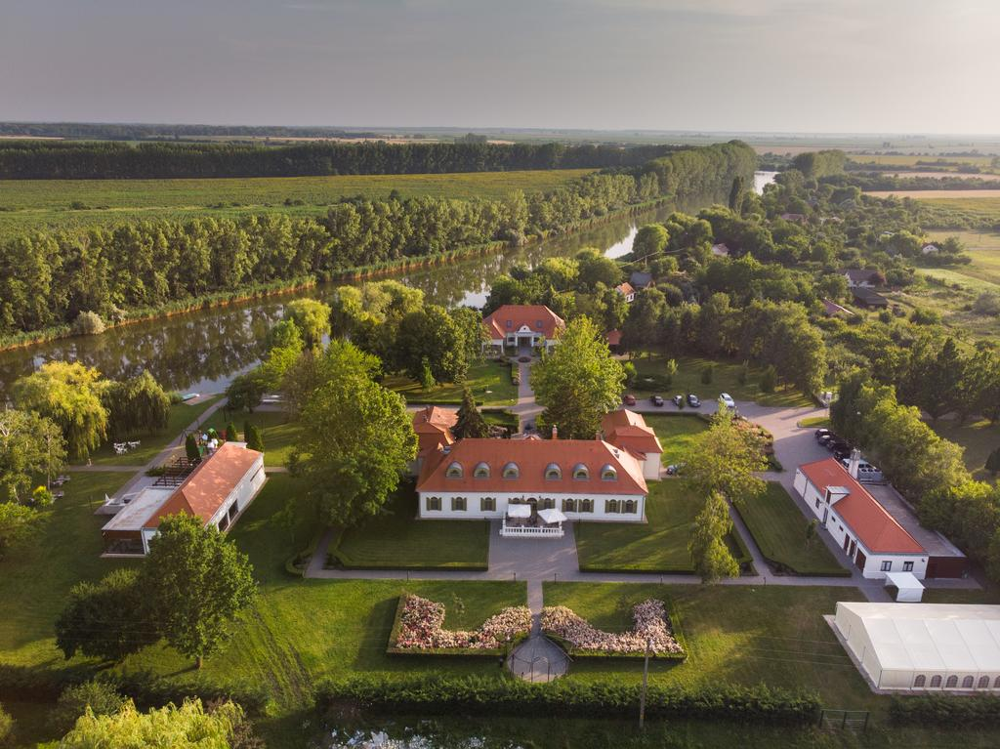

Köszöntöm az oldalamon, jó nézelődést!
Máté István Martin vagyok, Mezőtúron születtem 2000.05.23.-án.
Jelenleg egyetemre járok, a második félévemet taposom, de erről a tanulmányok menüpont alatt bővebben írok.
Néhány kép Mezőtúrról:
Mezőtúr Városháza
Hercegasszony Birtok
Mezőtúri Református Nagytemplom